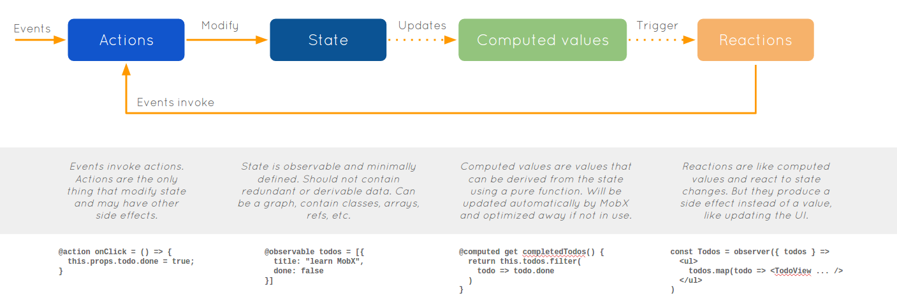

MobX
Simple, scalable state management


MobX is proudly sponsored by Mendix, Coinbase, Facebook Open Source, Canva, Algolia, Guilded, Auction Frontier, Mantro and TalentPlot for 100$/month or more! And beyond that by many individual backers and through one time contributions.
🥇Gold sponsors ($250+ pm):


🥉Bronze sponsors ($500+ total contributions):


Installation
- Installation:
npm install mobx --save. React bindings:npm install mobx-react --save. To enable ESNext decorators (optional), see below. - CDN:
Browser support
- MobX >=5 runs on any browser with ES6 proxy support. It will throw an error on startup on older environments such as IE11, Node.js <6 or React Native Android on old JavaScriptCore how-to-upgrade.
- MobX 4 runs on any ES5 browser and will be actively maintained. The MobX 4 and 5 api's are the same and semantically can achieve the same, but MobX 4 has some limitations.
Tip: the main entry point of the MobX 5 package ships with ES5 code for backward compatibility with all build tools. But since MobX 5 runs only on modern browsers anyway, consider using the faster and smaller ES6 build: lib/mobx.es6.js. For example by setting up a webpack alias: resolve: { alias: { mobx: __dirname + "/node_modules/mobx/lib/mobx.es6.js" }}
Translations
Getting started
- egghead.io course
- Ten minute, interactive MobX + React tutorial
 The MobX book by Pavan Podila and Michel Weststrate (which despite its name is in-depth!)
The MobX book by Pavan Podila and Michel Weststrate (which despite its name is in-depth!)- Official MobX 4 documentation and API overview (MobX 3, MobX 2)
- Videos:
- ReactNext 2016: Real World MobX - 40m slides
- Practical React with MobX. In depth introduction and explanation to MobX and React by Matt Ruby on OpenSourceNorth (ES5 only) - 42m.
- LearnCode.academy MobX tutorial Part I: MobX + React is AWESOME (7m) Part II: Computed Values and Nested/Referenced Observables (12m.)
- Screencast: intro to MobX - 8m
- Talk: State Management Is Easy, React Amsterdam 2016 conf (slides)
- Boilerplates and related projects
- More tutorials, blogs, videos, and other helpful resources can be found on the MobX awesome list
Introduction
MobX is a battle tested library that makes state management simple and scalable by transparently applying functional reactive programming (TFRP). The philosophy behind MobX is very simple:
Anything that can be derived from the application state, should be derived. Automatically.
which includes the UI, data serialization, server communication, etc.

React and MobX together are a powerful combination. React renders the application state by providing mechanisms to translate it into a tree of renderable components. MobX provides the mechanism to store and update the application state that React then uses.
Both React and MobX provide an optimal and unique solutions to common problems in application development. React provides mechanisms to optimally render UI by using a virtual DOM that reduces the number of costly DOM mutations. MobX provides mechanisms to optimally synchronize application state with your React components by using a reactive virtual dependency state graph that is only updated when strictly needed and is never stale.
Core concepts
MobX has only a few core concepts. The following snippets can be tried online using codesandbox example.
Observable state
Egghead.io lesson 1: observable & observer
MobX adds observable capabilities to existing data structures like objects, arrays and class instances. This can simply be done by annotating your class properties with the @observable decorator (ES.Next).
import { observable } from "mobx"
class Todo {
id = Math.random()
@observable title = ""
@observable finished = false
}
Using observable is like turning a property of an object into a spreadsheet cell.
But unlike spreadsheets, these values can be not only primitive values, but also references, objects and arrays.
If your environment doesn't support decorator syntax, don't worry. You can read here about how to set them up. Or you can skip them altogether, as MobX can be used fine without decorator syntax, by leveraging the decorate utility. Many MobX users do prefer the decorator syntax though, as it is slightly more concise.
import { decorate, observable } from "mobx"
class Todo {
id = Math.random()
title = ""
finished = false
}
decorate(Todo, {
title: observable,
finished: observable
})
Computed values
Egghead.io lesson 3: computed values
With MobX you can define values that will be derived automatically when relevant data is modified.
By using the @computed decorator or by using getter / setter functions when using (extend)Observable (Of course, you can use decorate here again as alternative to the @ syntax).
class TodoList {
@observable todos = []
@computed get unfinishedTodoCount() {
return this.todos.filter(todo => !todo.finished).length
}
}
MobX will ensure that unfinishedTodoCount is updated automatically when a todo is added or when one of the finished properties is modified.
Computations like these resemble formulas in spreadsheet programs like MS Excel. They update automatically and only when required.
Reactions
Egghead.io lesson 9: custom reactions
Reactions are similar to a computed value, but instead of producing a new value, a reaction produces a side effect for things like printing to the console, making network requests, incrementally updating the React component tree to patch the DOM, etc. In short, reactions bridge reactive and imperative programming.
React components
Egghead.io lesson 1: observable & observer
If you are using React, you can turn your (stateless function) components into reactive components by simply adding the observer function / decorator from the mobx-react package onto them.
import React, { Component } from "react"
import ReactDOM from "react-dom"
import { observer } from "mobx-react"
@observer
class TodoListView extends Component {
render() {
return (
<div>
<ul>
{this.props.todoList.todos.map(todo => (
<TodoView todo={todo} key={todo.id} />
))}
</ul>
Tasks left: {this.props.todoList.unfinishedTodoCount}
</div>
)
}
}
const TodoView = observer(({ todo }) => (
<li>
<input
type="checkbox"
checked={todo.finished}
onClick={() => (todo.finished = !todo.finished)}
/>
{todo.title}
</li>
))
const store = new TodoList()
ReactDOM.render(<TodoListView todoList={store} />, document.getElementById("mount"))
observer turns React (function) components into derivations of the data they render.
When using MobX there are no smart or dumb components.
All components render smartly but are defined in a dumb manner. MobX will simply make sure the components are always re-rendered whenever needed, but also no more than that. So the onClick handler in the above example will force the proper TodoView to render, and it will cause the TodoListView to render if the number of unfinished tasks has changed.
However, if you would remove the Tasks left line (or put it into a separate component), the TodoListView will no longer re-render when ticking a box. You can verify this yourself by changing the JSFiddle.
Custom reactions
Custom reactions can simply be created using the autorun,
reaction or when functions to fit your specific situations.
For example the following autorun prints a log message each time the amount of unfinishedTodoCount changes:
autorun(() => {
console.log("Tasks left: " + todos.unfinishedTodoCount)
})
What will MobX react to?
Why does a new message get printed each time the unfinishedTodoCount is changed? The answer is this rule of thumb:
MobX reacts to any existing observable property that is read during the execution of a tracked function.
For an in-depth explanation about how MobX determines to which observables needs to be reacted, check understanding what MobX reacts to.
Actions
Unlike many flux frameworks, MobX is unopinionated about how user events should be handled.
- This can be done in a Flux like manner.
- Or by processing events using RxJS.
- Or by simply handling events in the most straightforward way possible, as demonstrated in the above
onClickhandler.
In the end it all boils down to: Somehow the state should be updated.
After updating the state MobX will take care of the rest in an efficient, glitch-free manner. So simple statements, like below, are enough to automatically update the user interface.
There is no technical need for firing events, calling a dispatcher or what more. A React component in the end is nothing more than a fancy representation of your state. A derivation that will be managed by MobX.
store.todos.push(new Todo("Get Coffee"), new Todo("Write simpler code"))
store.todos[0].finished = true
Nonetheless, MobX has an optional built-in concept of actions.
Read this section as well if you want to know more about writing asynchronous actions. It's easy!
Use them to your advantage; they will help you to structure your code better and make wise decisions about when and where state should be modified.
MobX: Simple and scalable
MobX is one of the least obtrusive libraries you can use for state management. That makes the MobX approach not just simple, but very scalable as well:
Using classes and real references
With MobX you don't need to normalize your data. This makes the library very suitable for very complex domain models (At Mendix for example ~500 different domain classes in a single application).
Referential integrity is guaranteed
Since data doesn't need to be normalized, and MobX automatically tracks the relations between state and derivations, you get referential integrity for free. Rendering something that is accessed through three levels of indirection?
No problem, MobX will track them and re-render whenever one of the references changes. As a result staleness bugs are a thing of the past. As a programmer you might forget that changing some data might influence a seemingly unrelated component in a corner case. MobX won't forget.
Simpler actions are easier to maintain
As demonstrated above, modifying state when using MobX is very straightforward. You simply write down your intentions. MobX will take care of the rest.
Fine grained observability is efficient
MobX builds a graph of all the derivations in your application to find the least number of re-computations that is needed to prevent staleness. "Derive everything" might sound expensive, MobX builds a virtual derivation graph to minimize the number of recomputations needed to keep derivations in sync with the state.
In fact, when testing MobX at Mendix we found out that using this library to track the relations in our code is often a lot more efficient than pushing changes through our application by using handwritten events or "smart" selector based container components.
The simple reason is that MobX will establish far more fine grained 'listeners' on your data than you would do as a programmer.
Secondly MobX sees the causality between derivations so it can order them in such a way that no derivation has to run twice or introduces a glitch.
How that works? See this in-depth explanation of MobX.
Easy interoperability
MobX works with plain javascript structures. Due to its unobtrusiveness it works with most javascript libraries out of the box, without needing MobX specific library flavors.
So you can simply keep using your existing router, data fetching, and utility libraries like react-router, director, superagent, lodash etc.
For the same reason you can use it out of the box both server and client side, in isomorphic applications and with react-native.
The result of this is that you often need to learn less new concepts when using MobX in comparison to other state management solutions.
Credits
MobX is inspired by reactive programming principles as found in spreadsheets. It is inspired by MVVM frameworks like in MeteorJS tracker, knockout and Vue.js. But MobX brings Transparent Functional Reactive Programming to the next level and provides a stand alone implementation. It implements TFRP in a glitch-free, synchronous, predictable and efficient manner.
A ton of credits for Mendix, for providing the flexibility and support to maintain MobX and the chance to proof the philosophy of MobX in a real, complex, performance critical applications.
And finally kudos for all the people that believed in, tried, validated and even sponsored MobX.
Further resources and documentation
- The MobX book by Pavan Podila and Michel Weststrate (which despite its name is in-depth!)
- MobX homepage
- API overview
- Tutorials, Blogs & Videos
- Boilerplates
- Related projects
What others are saying...
Guise, #mobx isn't pubsub, or your grandpa's observer pattern. Nay, it is a carefully orchestrated observable dimensional portal fueled by the power cosmic. It doesn't do change detection, it's actually a level 20 psionic with soul knife, slashing your viewmodel into submission.
After using #mobx for lone projects for a few weeks, it feels awesome to introduce it to the team. Time: 1/2, Fun: 2X
Working with #mobx is basically a continuous loop of me going “this is way too simple, it definitely won’t work” only to be proven wrong
Try react-mobx with es6 and you will love it so much that you will hug someone.
I have built big apps with MobX already and comparing to the one before that which was using Redux, it is simpler to read and much easier to reason about.
The #mobx is the way I always want things to be! It's really surprising simple and fast! Totally awesome! Don't miss it!
Contributing
- Feel free to send small pull requests. Please discuss new features or big changes in a GitHub issue first.
- Use
npm testto run the basic test suite,npm run coveragefor the test suite with coverage andnpm run test:performancefor the performance tests. - Please note that if you want to backport a feature / fix to MobX 4 a second PR needs to be opened to the mobx4-master branch.
MobX 4 vs MobX 5
The difference between MobX 4 and MobX 5 is that the latter uses Proxies to do property tracking. As a consequence MobX 5 only runs on Proxy supporting browsers, in contrast to MobX 4 that runs on any ES 5 environment.
The most noteable limitations of MobX 4:
- Observable arrays are not real arrays, so they won't pass the
Array.isArray()check. The practical consequence is that you often need to.slice()the array first (to get a real array shallow copy) before passing to third party libraries. - Adding properties to existing observable objects after creation is not automatically picked up. Either use observable maps instead, or use the the build in utility functions to read / write / iterate objects that you want to dynamically add properties to.
For more details see the caveats page.
Flow support
MobX ships with flow typings. Flow will automatically include them when you import mobx modules. Although you do not need to import the types explicitly, you can still do it like this: import type { ... } from 'mobx'.
To use the flow typings shipped with MobX:
- In
.flowconfig, you cannot ignorenode_modules. - In
.flowconfig, you cannot import it explicitly in the[libs]section. - You do not need to install library definition using flow-typed.
Donating
Was MobX key in making your project a success? Join our open collective!
Backers
Support us with a monthly donation and help us continue our activities. [Become a backer]


Sponsors
Become a sponsor and get your logo on our README on Github with a link to your site. [Become a sponsor]